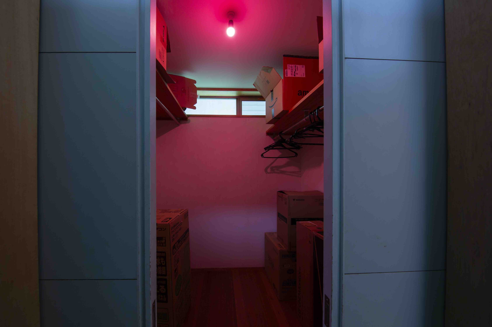
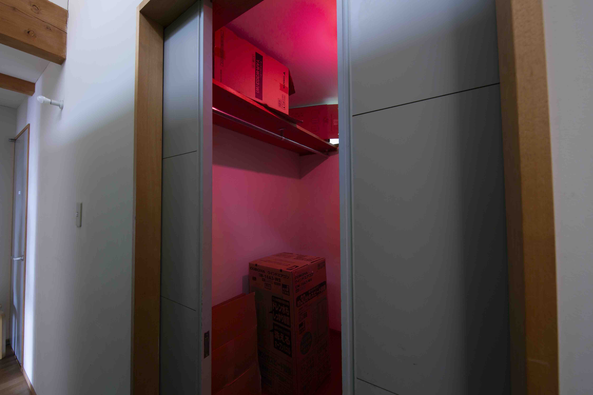

冷蔵庫
supermarket fridge #1
Akiko Yamane, 2025
I recorded the mechanical sound emitted from the refrigerators in the food section of a nearby supermarket. Using that recorded sound as the base, I layered square waves corresponding to its harmonics. On top of this, I added further square waves of different frequencies, as if painting over the sound with additional colors.
Sound installation
Duration: multiple sound sources looped indeterminately


photo: Daisuke Yokoyama
スーパーマーケットの冷蔵庫 #1
山根明季子、2025
家の近くにあるスーパーマーケットの食品売り場の冷蔵庫から発せられている機械音を録音し、そのベースとなっている音の自然倍音にあたる周波数を矩形波でいくつか重ねた。そして更に、色を塗り足すように異なる周波数の矩形波をいくつか重ねた。
サウンドインスタレーション
時間: 複数不確定にループ